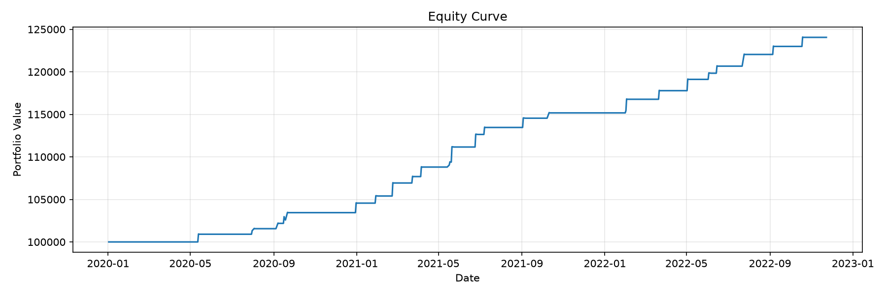
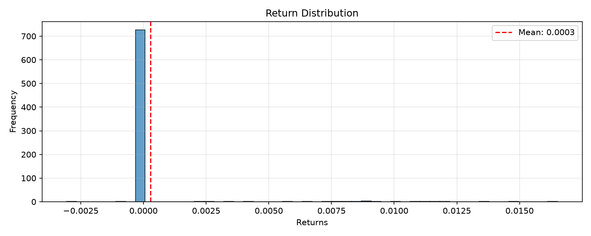

Symbol: PAIR
Strategy: zscore_mean_reversion
Periods: 755
| Metric | Value |
|---|---|
| Total Return | 24.05% |
| Annualized Return | 7.46% |
| Annualized Volatility | 2.72% |
| Sharpe Ratio | 1.92 |
| Sortino Ratio | 25.80 |
| Calmar Ratio | 19.59 |
| Max Drawdown | -0.38% |
| Omega Ratio | 114.61 |
| Skewness | 6.13 |
| Kurtosis | 39.70 |
| VaR (95%) | -0.00% |
| CVaR (95%) | -0.00% |
| Metric | Value |
|---|---|
| Panel Pricing Mode | net-exposure |
The reported P&L is net_exposure x mean(asset returns), and the costs are charged on the net exposure. A long/short book is not representable by that scalar: see the panel book diagnostic above.
| Metric | Value |
|---|---|
| Total Trades | 23.00 |
| Winning Trades | 11.00 |
| Losing Trades | 12.00 |
| Win Rate | 47.83% |
| Avg Win | 0.50% |
| Avg Loss | 0.79% |
| Profit Factor | 0.59 |
| Expectancy | -24048656145622909749732080207528137326592.0000 |
| Trades Closed at End | 0.00 |
| Pct Trades Closed at End | 0.00% |

